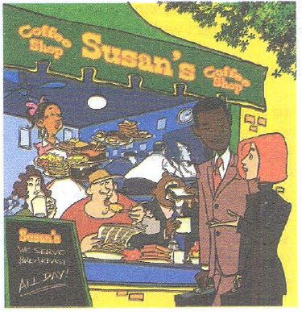

I get up at noon. ကၽြန္ေနာ္ေန႕လည္မွ အိပ္ရာက ထတယ္

Jack: Let's go to the park on Sunday.
တနဂၤေႏြေန႕ ပန္းျခံသြားၾကစို႕။
Amy: OK, but let's go in the afternoon. I sleep late on weekends.
အိုေက...ဒါေပမဲ့ ေန႕ခင္းသြားၾကမယ္ေလ။ တနဂၤေႏြ စေနေန႕ေတြက ကၽြန္ေနာ္ အိပ္တာေနာက္က်တယ္
Jack: What time do you get up on Sundays.
တနဂၤေႏြရက္ေတြဆို မင္းဘယ္အခ်ိန္ အိပ္ရာက ထလဲ
Amy: At ten o'clock.
10 နာရီ ထတယ္။
Jack: Oh, that's early. On Sundays, I get up at noon.
အိုး အေစာၾကီးပဲ။ တနဂၤေႏြရက္ေတြဆို ကၽြန္ေနာ္ ေန႕လည္မွ အိပ္ရာကထတာ။
Amy: Really? Do you eat breakfast then?
တကယ္လား ...နင္မနက္စာေကါ စားလို႕လား
Jack: Sure. I have breakfast every day.
စားတာေပါ့။ ေန႕တိုင္းစားတယ္။
Amy: Then let's meet at this restaurant at one o'clock.
ဒါဆို..တစ္နာရီခ်ိန္..ငါတို႕စားေသာက္ဆိုင္မွာ ဆံုၾကမယ္
They serve breakfast all day!
မနက္စာ တကယ္ေနကုန္ ရတယ္ေလ